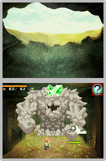
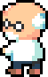

|  |
いやー、じつに新鮮。こういうパターンでくるか、というオープニングでした。まずメインの人間関係を整理して説明すると、ドットでカクカクしたファミコン風の上画面にいるのが科学者であるハカセと愛犬のニャンニャンです（犬なのに？）。

ハカセはなぜかプレイヤーの存在に気づいていて、下画面にいるチェリーという少年とコンタクトを取らせろと、こちらに呼びかけてきます。ついでに、こちらの住んでいる場所や好きな食べ物、趣味なども聞いてきて、なにやら画面内のハカセと本当に会話している気分。
そして、チェリーはハカセの誘いで冒険へ旅立つことに。いわばハカセがゲームのナビゲーターで、チェリーがゲームの主人公、そしてプレイヤーが2人の仲介役というところでしょうか。
この三角関係、ハカセが画面の手前にいるプレイヤーの存在を知っているというのがポイントですね。従来のＲＰＧのように自分の分身となる主人公キャラを操作している感じというよりも、ニンテンドーＤＳを使って『コンタクト』の世界に生身の自分が参加している気分になってくるから不思議です。
|
冒険の目的は世界中にちらばっているエレメントを集めてハカセに届けること。エレメントは敵がいるダンジョンの奥深くに隠されています。
バトルは敵と味方が交互に攻撃をくり返すオートバトルだからとってもカンタンです。経験値やレベルというものはなく、走りまわったり、敵に攻撃を加えたり、逆に敵からダメージを受けたりすると、関係する各種パラメータがアップしていきます。
敵を倒したときには武器として使えるアイテムを落とすこともあるので、距離をおいて逃げながらダンジョンの奥をめざすよりも、どんどん戦ってチェリーをきたえながら冒険を進めるのが正解ですよ。
|
|